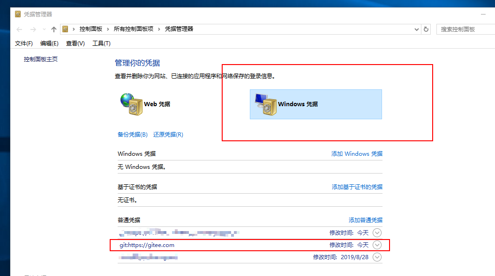

git init 生成本地仓库
git status 查看本地文件状态，未提交的文件显示红色
git add . (点表示提交所有文件到暂存区，也可指定部分文件到暂存区，填写指定文件名加路径即可)
git commit -m '备注信息' (一个add 对应一个commit )
-------- 到此为止是提交文件到暂存区的简单步骤 ---------
git remote add origin 提交地址 备注:这个一般第一次提交的时候选中即可，后期只要不动.git文件直接跳过这个命令即可
git pull --rebase origin 分支名 备注: 将本地与线上版本库同步 （如果代码只有一个人上传就不需要了）
git push -u origin 分支名 备注:正式将代码提交到指定分支
------ 说一下分支 -------
git一般默认的都是master分支，如果想要把代码上传到指定分支的话，一开始就要切换到指定的分支上去
可以先使用git checkout 分支名 切换到指定分支
如果失败的话可能是因为线上仓库没有指定分支名
git checkout -b 分支名 创建指定分支并切换一般就可以了
注：切换分支一定要在add 提交到暂存区之前进行，不然会出事故
-------------- 下面说几个自己碰到的常见问题-----------
有的git不记录账号和密码信息 ，可以直接到计算机的 windows凭证

比如这个就是win10的凭据管理器位置 ，在此设置好账号密码后面就不会再提示了